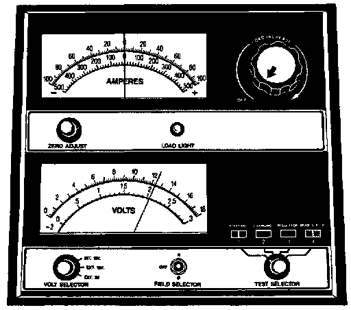

Battery Open Circuit Voltage Test
Testing Open Circuit Voltage:

A battery open-circuit voltage (no load) test will show the state-of-charge of a battery This test can be used in place of the hydrometer test when a hydrometer is not available, or for maintenance-free batteries with non-removable cell caps.
WARNING:
- IF THE BATTERY SHOWS SIGNS OF FREEZING, LEAKING, LOOSE POSTS, OR LOW ELECTROLYTE LEVEL, DO NOT TEST, ASSIST-BOOST, OR CHARGE. THE BATTERY MAY ARC INTERNALLY AND EXPLODE. PERSONAL INJURY AND/OR VEHICLE DAMAGE MAY RESULT.
- EXPLOSIVE HYDROGEN GAS FORMS IN AND AROUND THE BATTERY. DO NOT SMOKE, USE FLAME, OR CREATE SPARKS NEAR THE BATTERY. PERSONAL INJURY AND/OR VEHICLE DAMAGE MAY RESULT.
- THE BATTERY CONTAINS SULFURIC ACID, WHICH IS POISONOUS AND CAUSTIC. AVOID CONTACT WITH THE SKIN, EYES, OR CLOTHING. IN THE EVENT OF CONTACT, FLUSH WITH WATER AND CALL A PHYSICIAN IMMEDIATELY. KEEP OUT OF THE REACH OF CHILDREN.
- IF THE BATTERY IS EQUIPPED WITH REMOVABLE CELL CAPS, BE CERTAIN THAT EACH OF THE CELL CAPS IS IN PLACE AND TIGHT BEFORE THE BATTERY IS RETURNED TO SERVICE. PERSONAL INJURY AND/OR VEHICLE DAMAGE MAY RESULT FROM LOOSE OR MISSING CELL CAPS.
Before proceeding with this test, completely charge the battery as described in the Battery Charging procedure.
1. Before measuring the open-circuit voltage, the surface charge must be removed from the battery. Turn on the head lamps for fifteen seconds, then allow up to five minutes for the battery voltage to stabilize.
2. Disconnect and isolate both battery cables, negative cable first.
3. Using a voltmeter connected to the battery posts (refer to the instructions provided with the voltmeter), measure the open-circuit voltage.
Open Circuit Volts Charge Percentage
11.7 Volts or less 0 %
12.0 Volts 25 %
12.2 Volts 50 %
12.4 Volts 75 %
12.6 Volts 100 %
See the Open-Circuit Voltage chart. This voltage reading will indicate the battery state-of-charge, but will not reveal its cranking capacity. If a battery has an open-circuit voltage reading of 12.4 Volts or greater, it may be load tested to reveal its cranking capacity See the Load Test procedure for more information.